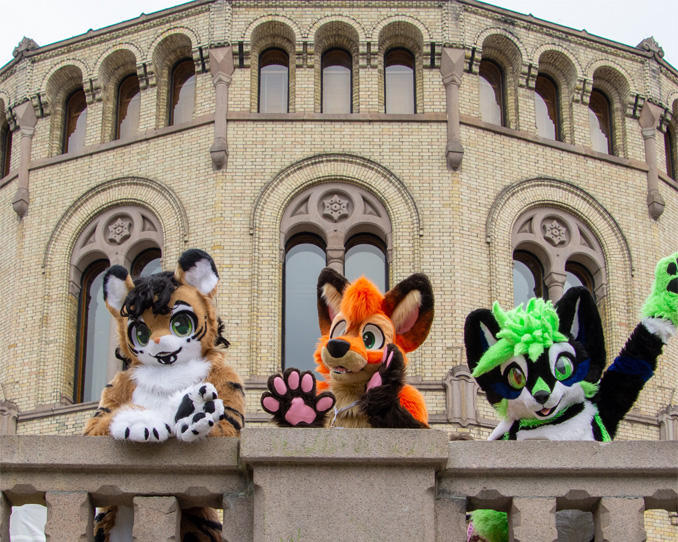

Welcome to NAK - Norsk Antropomorfisk Kunstforening (Norwegian Anthropomorphic Art Association). We work to promote anthropomorphic as an art form and represent art in its entirety.
What is anthropomorphism? Anthropomorphism means human-like. That something that is anthropomorphic has human form or human traits. Often the concept is used in connection with animals, especially in what is now known as the furry community.